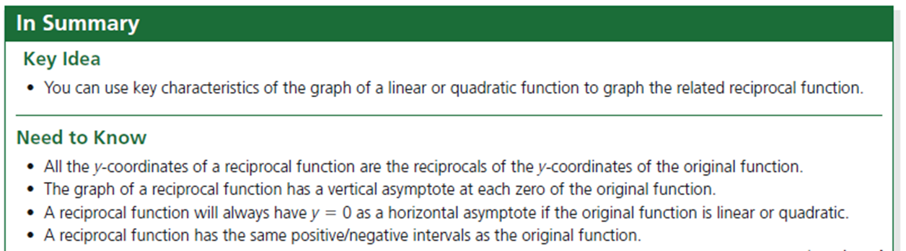

That's a Wrap!
Learning Goals
Students can sketch the graphs of reciprocals of linear and quadratic functions.
Students can sketch the graphs of quotients of polynomial functions.
Students can sketch the graphs of rational functions, given equations of the form f(x) = (ax + b) / (cx + d).
Students can connect the solution to a rational equation with the graph of a rational function.
Students can solve rational inequalities using algebraic and graphical approaches.
Students can determine average and instantaneous rates of change in rational functions.
Success Criteria
I can sketch the graphs of reciprocals of linear and quadratic functions.
I can sketch the graphs of quotients of polynomial functions.
I can sketch the graphs of rational functions, given equations of the form f(x) = (ax + b) / (cx + d).
I can connect the solution to a rational equation with the graph of a rational function.
I can solve rational inequalities using algebraic and graphical approaches.
I can determine average and instantaneous rates of change in rational functions.
summary
